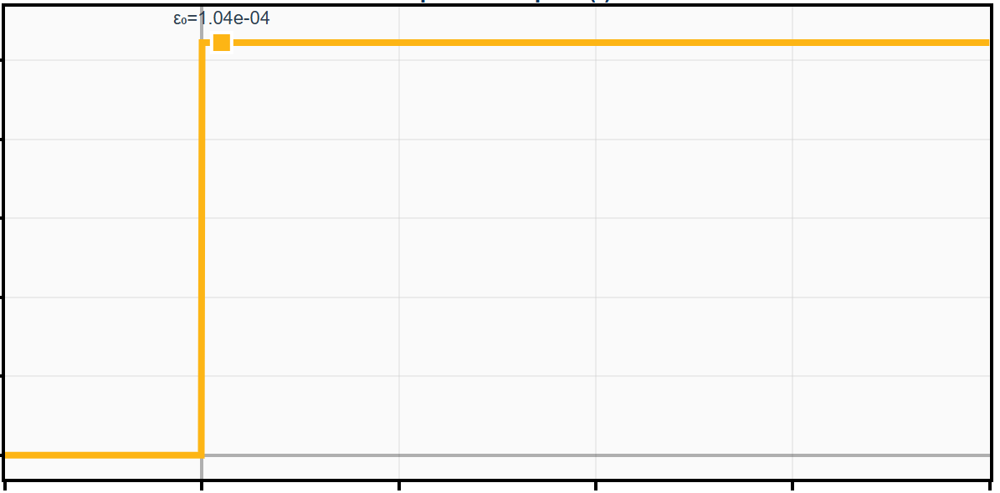
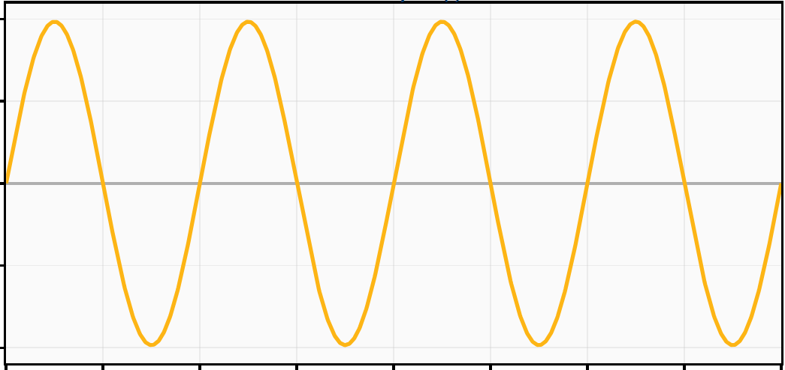
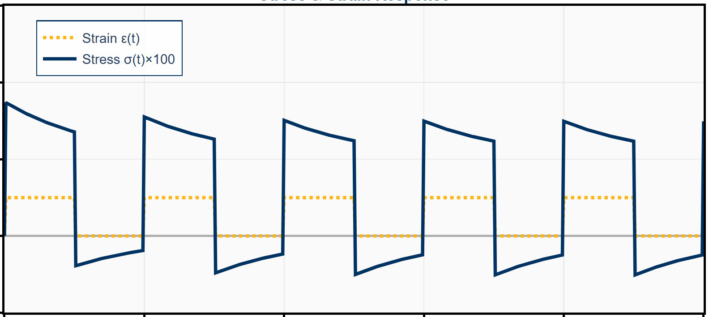

Fe — Directional E
Interactive point cloud r(θ,φ)=E(θ,φ)·d computed from cubic stiffness.
Selected highlights from assignments and exploratory analyses in solid mechanics. Interactive plots open as external pages. View the full codebase on GitHub.
Interactive point cloud r(θ,φ)=E(θ,φ)·d computed from cubic stiffness.

Explore anisotropy and directional stiffness for niobium.

General anisotropic example; hover for E, θ, φ, and direction vector.
These visualizations represent the directional Young's modulus as 3D point clouds for anisotropic materials. Each point's radial distance from the origin corresponds to the material stiffness in that direction, revealing crystallographic symmetries. The interactive plots allow rotation and inspection of cubic (Fe, Nb) and general anisotropic (NiTi) stiffness tensors, providing intuitive insight into how elastic properties vary with orientation.

Interactive relaxation modulus and stress response to step strain input.

Standard Linear Solid subjected to harmonic strain; hysteresis loop visualization.

SLS with square wave strain; Backward Euler time integration and viscous strain evolution.
These dashboards explore time-dependent material behavior in viscoelastic solids. The Step Response shows relaxation of stress following an instantaneous strain. The Sinusoidal Response demonstrates energy dissipation through hysteresis loops under cyclic loading. The Square Wave Response implements Backward Euler time integration to capture transient viscous strain evolution. Each dashboard features interactive sliders to vary input parameters and observe real-time changes in stress-strain relationships.
The viscoelastic dashboards feature synchronized sliders to explore material response under different input parameters. Each dashboard includes stress-strain paths, characteristic values, and mathematical formulations.